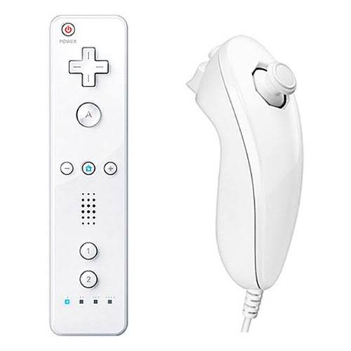

Discovery ProjectIn Progress
Homemade Wii Remote
My Individual Discovery Project: designing and building my own Wii Remote, from the electronics to the physical controller, that connects to a PC and works with the Dolphin emulator.
Read the project feature →